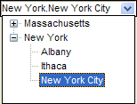

Setting Choices for Tree Controls
A data field displayed as a tree control or drop-down tree control accepts only values that are in its choice list. These images show a tree control in regular and drop-down formats.


Select the control, choose Object > Properties and display the Setup tab.
Select "List Box" or "Tree Control" in the Field-Type list.
Display the Choices tab.
Select one of the Choices for control. The options are:
- " User Defined "
- " Computed Automatically "
- " Populated using Xbasic "
If you selected "User Defined" in step 4:
Enter choices one per line in the following format. Note that you use a period "." to step down to the next level. A tree control may have up to 9 levels.
|
level1_value1.level2_value1.level3_value1.level4_value1 level1_value1.level2_value1.level3_value1.level4_value2 ... |
Optionally, click
 or
or  to sort the entries in ascending
or descending order.
to sort the entries in ascending
or descending order.Click OK to save your choices definition.
If you selected "Computed Automatically" in step 4, make a selection from the Source list. The options are:
If you selected "Populated Using Xbasic" in step 4:
Right click the form and select Events > OnInit.
Add a statement with the following format.
|
TreeControlName.settings.dynamic_list = |
The
If you selected "Values from a table/set" in step 8:
Make a selection from the From Table list.
Enter an expression in the Field/expression control. Optionally, select "
" to display the <span class=Screen>Expression Builder</span> to help you define the expression. Note that the expression should in the following format to create branches for the tree.
|
value1 + "." + value2 + "." + value3 |
Optionally, click
 to display the Order Builder
to order the list choices that will appear.
to display the Order Builder
to order the list choices that will appear.A filter expression selects values from a lookup table based on one or more values in the current table. Optionally check Enable Filter Expression and click Edit Filter Expression to display the <span class=Screen>Filter Expression</span> dialog box.
Optionally, check Display only unique keys to avoid duplicate entries in the list.
Optionally, click Preview to see the data that the list will contain.
Click OK to save your choices.
If you selected "Expression (that returns a CR-LF delimited list)" in step 8:
In the Expression field enter a call to a function or script that returns a list of CR-LF delimited values. Optionally, click
 to display the <span class=Screen>Expression Builder</span> dialog box. Note that the each line of data returned
should be in the following format to create branches for the tree.
to display the <span class=Screen>Expression Builder</span> dialog box. Note that the each line of data returned
should be in the following format to create branches for the tree.
|
value1 + "." + value2 + "." + value3 + crlf() |
Optionally, enter an expression in the Watch Expression field. When this value changes, Alpha Five will refresh the choice list.
Optionally, click Preview to see the data that the list will contain.
Click OK to save your choices.
See Also
Specifying Choices, Creating a Tree Control Based on a Set, *TREE_FROM_OUTLINE(), *TREE_TO_OUTLINE()